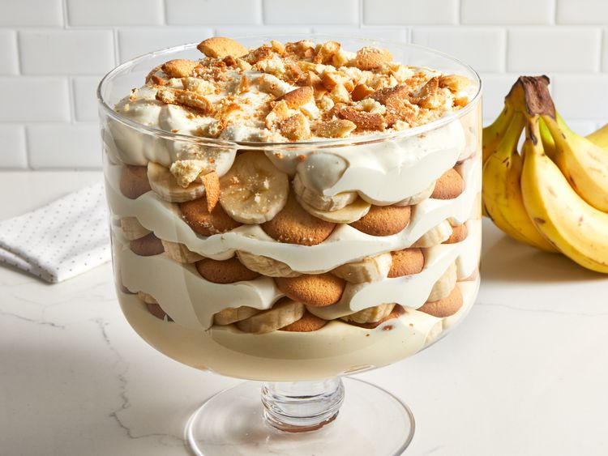

Banana Pudding

Ingredients
Our best banana pudding recipe is easy to make and assemble with convenient ingredients:
- Milk and pudding mix: This easy banana pudding recipe starts with vanilla pudding mix dissolved in cold milk.
- Sweetened condensed milk: Like so many of the most delicious desserts, this banana pudding contains a can of sweetened condensed milk.
- Vanilla: Vanilla extract enhances the flavor of the banana pudding.
- Frozen whipped topping: Fold frozen whipped topping (such as Cool Whip) into the pudding mixture for a rich, fluffy texture.
- Vanilla wafers: Vanilla wafers add more flavor and welcome crunch.
- Bananas: Of course, you'll need bananas! Slice them up just before you assemble the pudding.
How to Make Banana Pudding
You'll find the full, step-by-step recipe below — but here's a brief overview of what you can expect when you make homemade banana pudding:
- Whisk the pudding mix into the milk.
- Add the sweetened condensed milk and vanilla.
- Fold in the frozen whipped topping.
- Layer the mixture with the sliced bananas and vanilla wafers.
Ingredients
- 2 cups cold milk
- 1 (5 ounce) package instant vanilla pudding mix
- 1 (14 ounce) can sweetened condensed milk
- 1 tablespoon vanilla extract
- 1 (12 ounce) container frozen whipped topping, thawed
- 1 (16 ounce) package vanilla wafers
- 14 small bananas, sliced or to taste
Directions
Gather all ingredients.
- Place milk and pudding mix in a large bowl; beat with a whisk for 2 minutes. Blend in condensed milk until smooth.
- Stir in vanilla, then fold in whipped topping.
- For best results, chill pudding in the refrigerator for at least an hour before serving. When ready to serve top with extra crushed wafers.
- Enjoy!